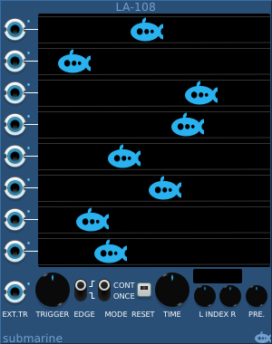
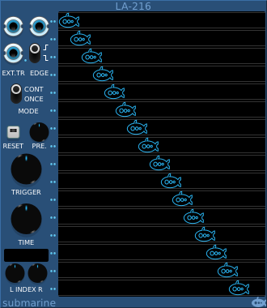

The logic analyser takes 8 input signals which it will trace out on the scope screen. It is designed to take digital signals, but it will happily accept analog signals which will be clamped to the configured range. It has one additional input (EXT.TR) which is not traced, but which can be used as a trigger.
The polyphonic analyser has 2 inputs (plus an external trigger) and will output up to 16 traces for each.
Any one of the 9 input signals can be used as a trigger to synchronise the scope display. The TRIGGER knob will select the input to be used, and a small blue led next to the input will illuminate to indicate the selected input. By default the analyser synchs on a rising edge of the trigger input, but the EDGE switch allows you to synch on falling edges instead.
In normal operation, the analyser traces continuously, but the MODE switch allows it to be put into a one-shot mode, which will make one sweep and then hold the display. To use one-shot mode, set the MODE switch to 'ONCE' and press the RESET button. The RESET button will illuminate and the analyser will wait until the next trigger event. When it receives an appropriate edge on the selected trigger input, it will record one trace, the RESET button led will extinguish and the display will not change again.
To make another trace, press the RESET button again and wait for the next trigger edge.
To return to continuous operation set the MODE switch to 'CONT'
The TIME knob will adjust the time resolution of the scope, showing a longer or shorter period of time in a single sweep.
There are two indices provided, these are displayed as vertical white lines on the scope display. They can be adjusted using the INDEX knobs. The time span between the two indices is displayed above the INDEX knobs.
You can use an index to help you compare the edges of signals from different traces, checking that they align, or if one signal lags or leads the other.
Alternatively using both indices and the time span display will allow you to measure the length of a pulse or event in a trace, Or by setting the indices to a known time span, you can adjust other devices in your rack until a signal is of the desired duration.
The PRE. knob controls the display of the content of the pre-trigger buffer. This 32-sample buffer is constantly filled by the scope and is available to display the up to 32 samples prior to the trigger point. By adjusting the PRE. knob you can adjust how much of this buffer is displayed. The trigger point is indicated by a vertical red line on the display.